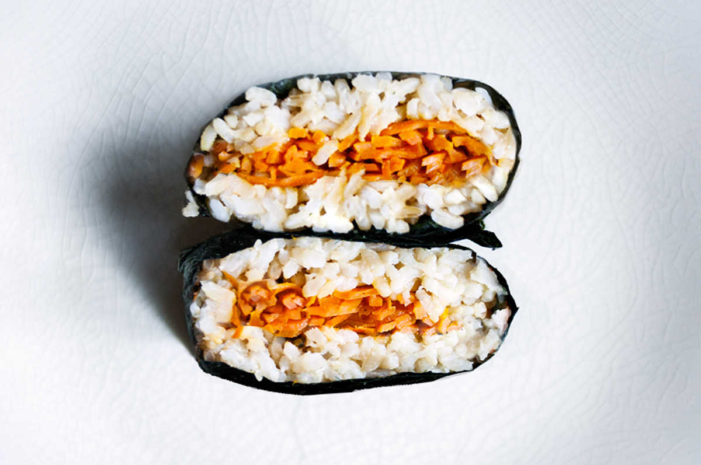
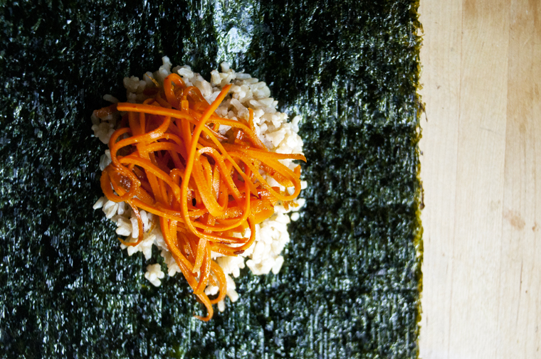

carrot kinpira onigirazu
4 servings — 20 minutes
An onigirazu is a Japanese rice ball sandwich, or a 'lazy onigiri'.
The word onigiri (or nigiru) means to press into shape using your hands, while "razu" means the opposite. Free form onigiri! This is perfect for people who have a hard time making rice balls, as is the case for me. Onigirazu has the same great taste, without the fear of imperfection.
This recipe is perfect when you don't have the right type of rice available for onigiri. You can use just about any type, I tested it out a few different kinds. The seaweed wrapping will keep it together, thus eliminating the need for sticky rice.
The rice was seasoned with miso for added flavour, and was filled with carrot 'kinpira' — 'Kinpira' means "sauteed" (usually with a mixture of mirin soy sauce and chili peppers.) It's a sweet and spicy dish that is often served in bentos.

You should try and make your own version of onigirazu at home! As I said, it's no-fail.
 carrots 2
carrots 2 maple syrup 10 ml
maple syrup 10 ml mirin 10 ml
mirin 10 ml soy sauce 30 ml
soy sauce 30 ml sesame oil 15 ml
sesame oil 15 ml chili pepper flakes 5 ml
chili pepper flakes 5 ml
kinpira carrot
- Peel and cut 2 large carrot into thin strips using a julienne peeler (a knife will do, but it will take longer).
- Stir these ingredients together to make the sauce for the kinpira: 10 ml (2 tsp) of maple syrup, 10 ml (2 tsp) of mirin and 30 ml (2 tsp) of soy sauce.
- Heat 15 ml (1 tbsp) of sesame oil in a pan at medium heat, add the carrot strips and cook for 2-3 minutes. Stir in 5 ml (1 tsp) of chili pepper flakes as well as the sauce prepared in the previous step.
- Cook until no liquid remains. Let cool.
 short grain white rice 1 cup
short grain white rice 1 cup white miso 15 ml
white miso 15 ml water 350 ml
water 350 ml
rice
- Wash 190g (~1 cup) of short grain white rice to release excess starch, until water runs clear. Soak for 30 min (in summer) and 2h (in winter).
- Add 350 ml (1 1/2 cups) of water into a pot, add the rice and 15 ml (1 tbsp) of white miso. Stir to dissolve miso into liquid/rice. Bring pot contents to a boil, turn heat to low and cover pot with lid. Cook for 10 minutes, turn heat off and let rest for 10 min before uncovering.
 nori sheets 4
nori sheets 4
wrapper
- Lay out 4 pieces of nori sheets, rough side up. Lay out some rice in the center of the 4 sheets, then divide the carrot kinpira into 4 portions and lay over the rice. Cover the carrots with the remaining rice.
- Now, take one corner of the nori sheet and fold over into the middle, do the same for the opposing corner. Then, repeat for the other 2 corners. Press down gently.
- Wait until the nori has softened and then cut into the middle! Serve as is.